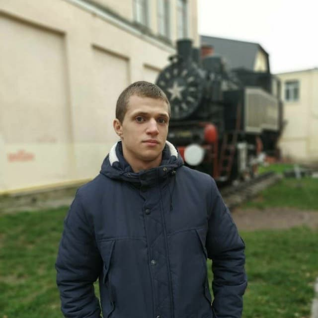

Привіт! Мене Звати Мартиненко Олександр Вікторович і це моя персональна сторінка!

Мартиненко Олександр Вікторович
Моє хоббі:
Моє хоббі це стрільба з лука , або лучництво. Це мистецтво та спорт , що полягає у вмінні стріляти з лука у ціль стрілами.Мистецтво стріляти з лука виникло в епоху пізнього палеоліту або раннього мезоліту. Найстарші знахідки, пов'язані зі стрільбою з лука, датуються восьмим-дев'ятим століттям до нашої ери. Історично стрільба з лука використовувалася для полювання і бойових дій. Лук використовувався з такою метою практично всюди. Єдиним регіоном, де мистецтво стріляти з лука не було відомо аж до XIX століття, є Австралія і Океанія. У великих бойових діях лук останній раз використовувався на початку XIX століття.
Історія
Лук є першим механічним пристроєм, придуманим людиною.

Найдавніші, коли-небудь знайдені наконечники для стріл датуються 25 000 до н.е., сама ж стрільба з лука з'явилася мало не за 40 000 років до н.е. Тобто, майже одночасно з нашими предками Homo sapiens. Вперше на Олімпійських іграх стрільба з лука була представлена вже в 1900 році. Після 1920 року через відсутність єдиних міжнародних правил змагання зі стрільби з лука не проводилися аж до 1972 року, хоча офіційно стрільба з лука затверджена як олімпійський вид спорту з 1958 року. Стрільба з лука - єдиний олімпійський вид спорту, де інваліди мають такі ж права і можливості і можуть стріляти в загальному заліку. Вага лука складає більше 22 кг для чоловіків, і більше 15 кг для жінок. В основному тятива виробляються з гідрокарбонових матеріалів, хоча деякі робляться і з кевлара, матеріалу використовуваного для виготовлення бронежилетів. Середня швидкість польоту стріли становить 240 км / ч. Дальність польоту залежить від сили натягу лука, кута стрільби і безлічі інших чинників, таких як швидкість і напрям вітру, вологість повітря і т.д. Однак, дещо про стрілянину на дальність нам все-таки відомо. Рекордні дистанції, на які коли-небудь літала стріла, такі:
- 1220 метрів пролетіла стріла, випущена з лука Доном Брауном в 1987 році
- 543 метра - така дальність польоту стріли, випущеної з класичного лука Майком Уілрічем в 1995-му


- Найвищою дальнобійності (889 м) стрільби досяг турецький султан Селім III на змаганнях у Стамбулі в 1798 році

- Цурута Масатокі, лучник, який стояв на службі у феодального правителя Сакаї, 19 травня 1852 роки випустив по мішені 10050 стріл (5368 з них вразили центр мішені) протягом двадцяти годин безперервної стрільби, випускаючи в середньому по 9 стріл на хвилину.

У епічній літературі згадується Йоіті Насу, воїн з фракції Мінамото, який в битві при Ясіма, у відповідь на кинутий Тайра виклик послав з берега стрілу і зумів вразити нею з великої відстані віяло, прикріплений до щогли розгойдується на хвилях човни.


Стрільба з лука, це змагання між спортсменами, що стріляють стрілами з лука і намагаються набрати найбільшу кількість очок, прагнучи вразити найменше внутрішнє кільце на 1.22 метрової круглої мішені. Вигнутий лук зі склопластику дозволяє стріляти алюмінієвими і вуглепластиковим стрілами надаючи їм швидкість 240 км / год і дистанцію понад 70 метрів.